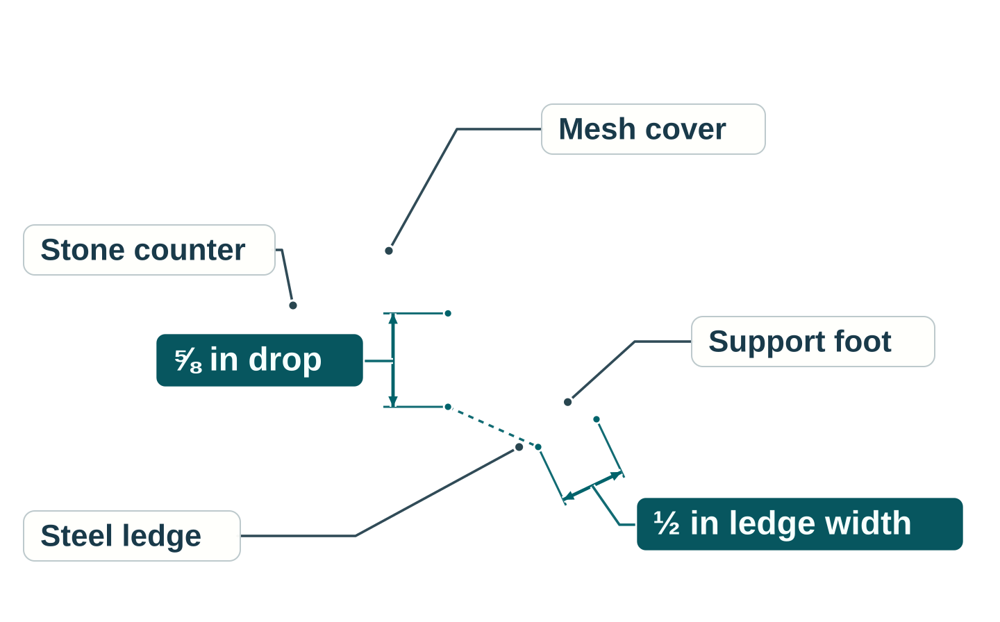
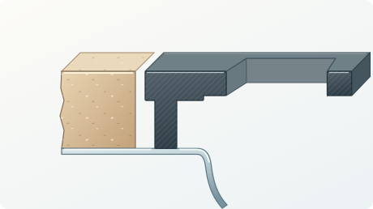
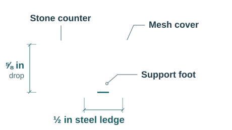

A little peace
at the sink.
A removable honeycomb cover follows the curves of your sink. Its rim stands on the steel shelf so the mesh sits level with the stone.
iPaper fit confirmed
Your paper template follows the stone opening. The flat steel ledge measures ½ inch across.
Drag to orbit · Scroll to zoom · Right-drag to pan
The fitted cover
The broad curves at the faucet side and the tighter front corners follow the outline you checked on paper.
- Opening width at center
- 22 1/16 in
- Opening depth at center
- 19 1/2 in
- Gap to stone
- 2 mm per side, provisional
- Clear hex opening
- 1 in (25.4 mm) across flats
- Mesh depth / web width
- 5 mm / 4.5 mm
- Frame width / height
- 12 mm / 6 mm
- Support below frame
- 9.875 mm tall × 4.5 mm wide
- Shelf to countertop
- 5/8 in · 15.875 mm
- Proposed material
- PETG





With the cover centered, the foot reaches 8.5 mm in from the stone. That leaves 4.2 mm of flat steel before the ledge curves into the bowl. Lift the cover straight up to remove it.
View the shelf-height measurement guide
Check the opening size, shelf contact and strength before letting your cat use the sink area. The cover master is a single piece.
Your design files
The cover model includes the support rim. The separate sink scene shows how the cover sits in the opening.